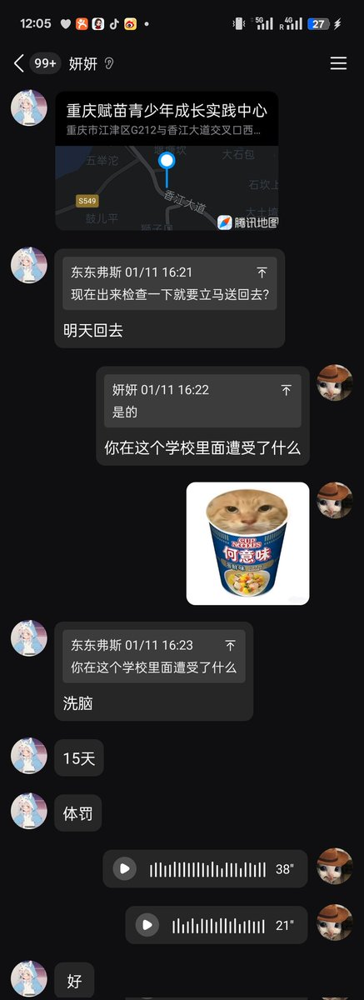
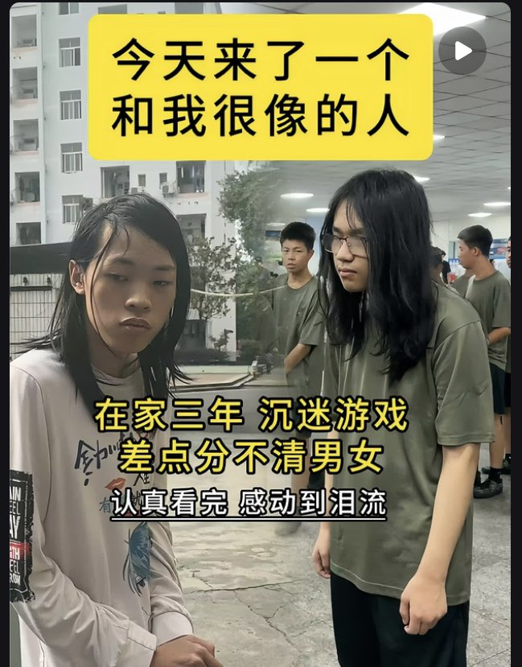

牧鸢
@LwrDHYyuxR22499
经多方比对核实该校设有多个关联账号其真实名称为重庆赋苗教育，与此前曾因抓捕跨性别者被曝光的机构系同一家
在此公开该校鹰犬个人联系方式以正视听
无独有偶近日一名曾被囚禁于此的跨性别女性主动联系到我控诉自己在机构内遭受暴力殴打体罚虐待精神洗脑不堪折磨她甚至曾以吞电池干燥剂的方式试图自杀


F菌🏳️⚧️
@FJUNNNN
emmmmm
矫正机构还拍上续集了_(´ཀ`」 ∠)_ https://t.co/zisQ8AhBLt